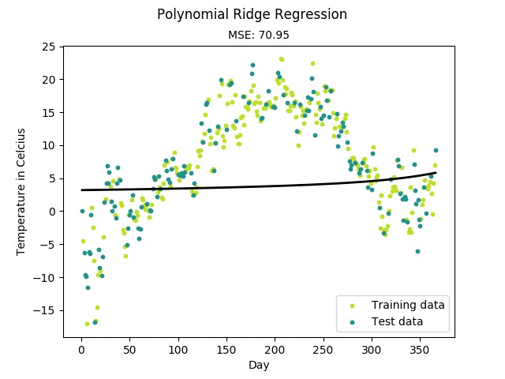
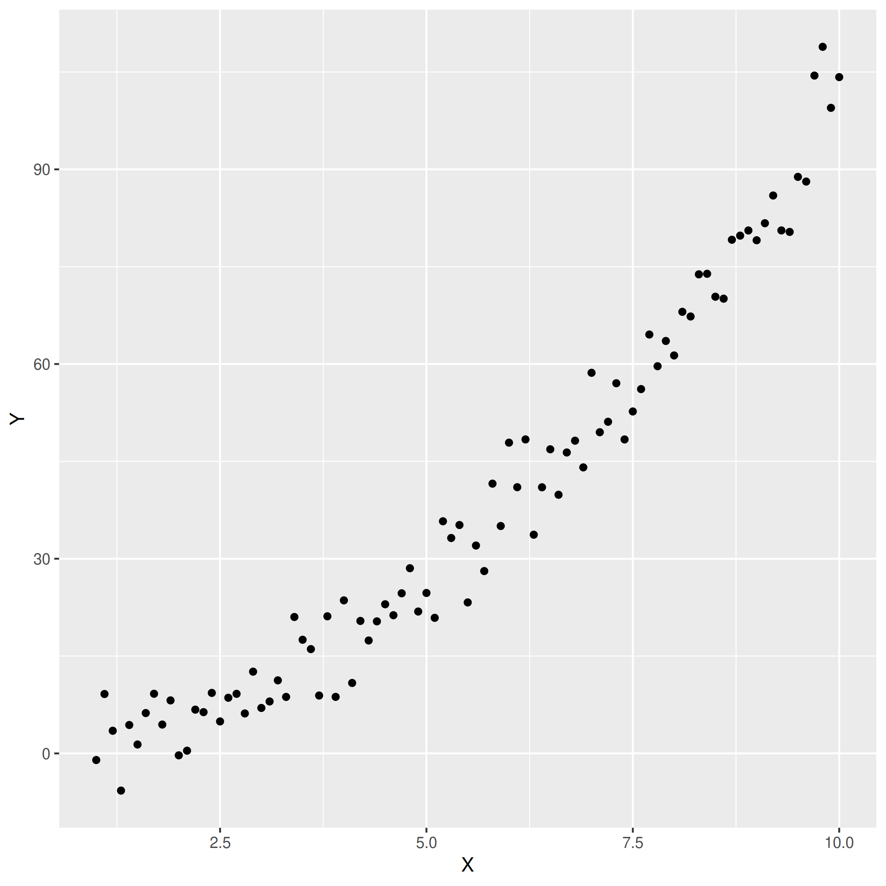
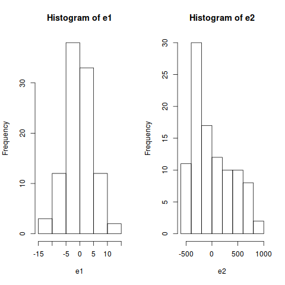
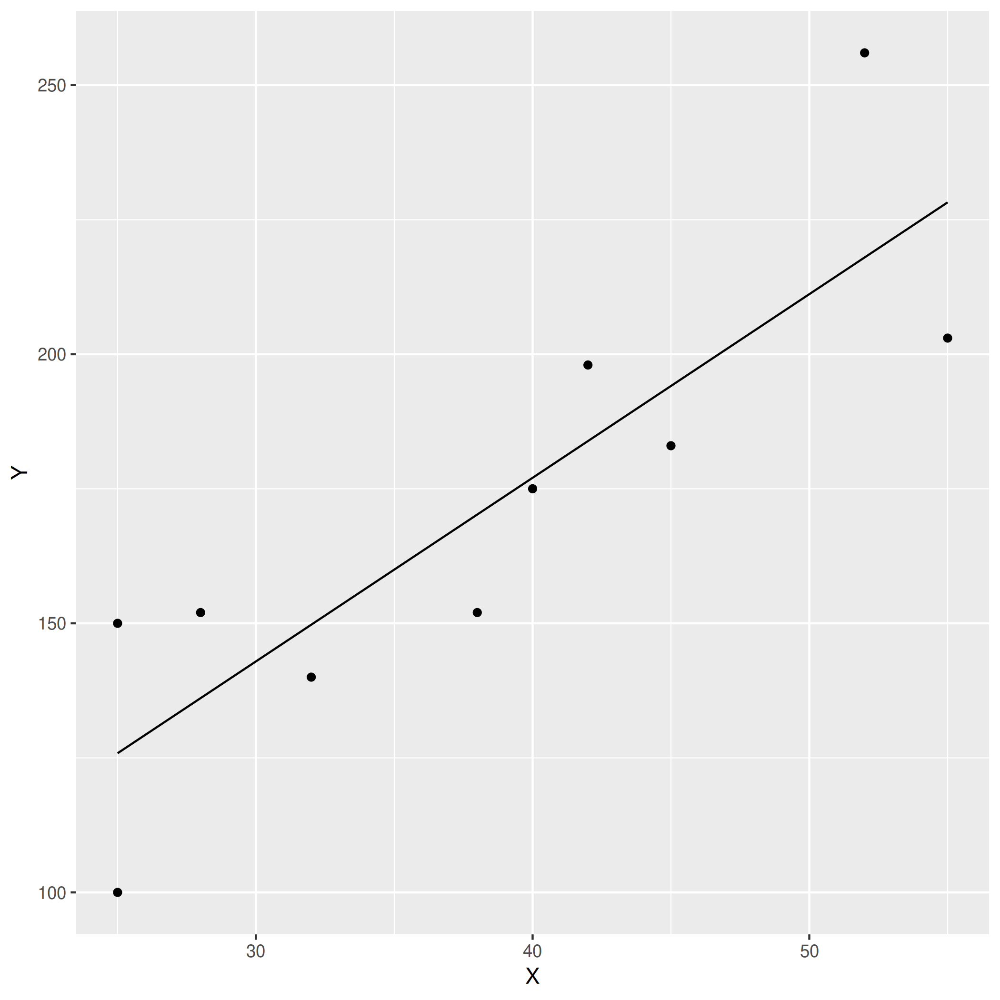

class: center, middle # Linear Regression <h3 style="color: darkblue">Tae Geun Kim</h3> --- ## Table of Contents -- * What is regression? --- class: center, middle # What is regression? --- ### What is regression? -- .center[] --- ### What is regression? -- > In statistical modeling, regression analysis is a set of statistical processes for estimating the relationships among variables -- Thus, regression is -- * Just estimate correlation between variables (= modeling) -- * And almost all of statistics. -- Regression is divided into two stages: -- * Modeling -- * Estimate parameters --- ### Modeling -- .center[] -- Q. How can we model this? --- ### Modeling We suppose next relation : $$ Y = f(X) + \epsilon $$ -- * `\(X\)` is value of independent variables (not random variable!) -- * `\(f\)` is relation -- * `\(\epsilon\)` is error - it follows `\(N(0,\sigma^2)\)` -- with next assumption : -- * Every error forms normal distribution and independent of `\(X\)` -- * Each error of observations is independent $$ Cov(\epsilon\_i, \epsilon\_j) = 0 $$ -- * `\(Y \sim N(f(X), \sigma^2)\)` --- ### `\(\epsilon \sim N(0,\sigma^2)\)` -- Q. Why error should belong to normal distribution? -- This question is same as... -- Q. Why does cheese cake taste cheese? -- > ... Laplace used the normal curve in 1783 to describe the distribution of errors. Subsequently, Gauss used the normal curve to analyze astronomical data in 1809. The normal curve is often called the Gaussian distribution. The term bell-shaped curve is often used in everyday usage. -- * Error doesn't follow normal distribution. -- * Normal distribution is defined from distribution of errors. --- ### `\(\epsilon \sim N(0,\sigma^2)\)` For example, see next R code ```R x = 1:100 # Model 1 y1 = 0.5 * x + rnorm(100) * 5 m1 = lm(y1 ~ x) e1 = y1 - m1$fitted.values # Model 2 y2 = 0.5 * x^2 + rnorm(100) * 5 m2 = lm(y2 ~ x) e2 = y2 - m2$fitted.values par(mfrow=c(1,2)) hist(e1) hist(e2) shapiro.test(e1) shapiro.test(e2) ``` --- ### `\(\epsilon \sim N(0,\sigma^2)\)` Then we get next figures -- .center[] --- ### `\(\epsilon \sim N(0,\sigma^2)\)` And we get next values -- ```sh Shapiro-Wilk normality test data: e1 W = 0.99039, p-value = 0.6959 Shapiro-Wilk normality test data: e2 W = 0.89423, p-value = 7.642e-07 ``` -- There are many ways to test normality --- class: middle, center ## Homework #6 <p style="font-size:24px">Search and implement any normality test</p> --- class: middle, center # Simple Linear Regression --- ### Simple Linear Regression -- For simple linear regression, we use least square method - minimize RSS -- * Model $$ \hat{Y} = \beta\_0 + \beta\_1 X $$ -- <br/> * Error $$ RSS = \sum\_{i=1}^n e\_i^2 = \sum\_{i=1}^n (Y\_i - \hat{Y}\_i)^2 = \sum\_{i=1}^n (Y\_i - \beta\_0 - \beta\_1 X\_i)^2$$ --- ### Simple Linear Regression To find `\(\beta_0, \beta_1\)`, we use partial derivative : -- $$ \begin{gathered} \frac{\partial Q}{\partial \beta\_0} \sim \sum\_{i=1}^n(Y\_i - \beta\_0 - \beta\_1 X\_i) = 0 \\\ \frac{\partial Q}{\partial \beta\_1} \sim \sum\_{i=1}^n(Y\_i - \beta\_0 - \beta\_1 X\_i)\cdot(X\_i) = 0 \end{gathered} $$ -- Then we can get next equation (normal equation) -- $$ \begin{gathered} \sum\_i Y\_i = n\beta\_0 + \beta\_i \sum\_i X\_i \\\ \sum\_i X\_i Y\_i = \beta\_0 \sum\_i X\_i + \beta\_1 \sum\_i X\_i^2 \end{gathered} $$ --- ### Simple Linear Regression Finally, we obtain parameters! -- $$ \begin{aligned} \beta\_1 &= \frac{n\sum X\_i Y\_i - (\sum X\_i)(\sum Y\_i)}{n\sum X\_i^2 - (\sum X\_i)^2} \\\ \beta\_0 &= \frac{1}{n}(\sum Y\_i - \beta\_1 \sum X\_i) \end{aligned} $$ -- It can be represented as : -- $$ \begin{aligned} \beta\_1 &= \frac{\sum(X\_i - \bar{X})(Y\_i - \bar{Y})}{(X\_i - \bar{X}\_i)^2} \\\ \beta\_0 &= \bar{Y} - \beta\_1 \bar{X} \end{aligned} $$ --- class: middle, center ## Homework #7 <p style="font-size:24px">Prove all formulae in previous slide</p> --- ### Example - Effective advertising <table id="tab01" align="center"> <tr> <th>Month</th> <th>Advertise Cost</th> <th>Sales</th> </tr> <tr> <td>1</td> <td>25</td> <td>100</td> </tr> <tr> <td>2</td> <td>52</td> <td>256</td> </tr> <tr> <td>3</td> <td>38</td> <td>152</td> </tr> <tr> <td>4</td> <td>32</td> <td>140</td> </tr> <tr> <td>...</td> <td>...</td> <td>...</td> </tr> <tr> <td>10</td> <td>42</td> <td>198</td> </tr> </table> > Refer to `data.csv`, do simple linear regression for this example. ```sh wget https://github.com/Axect/ML_Project/raw/master/Lecture/5th/Note/data.csv ``` --- ### Example - Effective Advertising .center[] --- class: middle, center # Evaluation of Regression --- ### Evaluation of Regression There are two ways to evaluate regression model: -- * Standard error of the estimate -- * Coefficient of determination -- Standard error of the estimate is simple. -- $$ S\_{y\cdot x} = \sqrt{\frac{\sum (Y\_i - \hat{Y}\_i)^2}{n - 2}}$$ -- * Near 0 is best -- * But this is only valid for relative comparison (Not absolute) --- ### Coefficient of determination Total variation can be divided by two parts: -- $$ \underbrace{(Y\_i - \bar{Y})}\_{\text{total dev}} = \overbrace{(Y\_i - \hat{Y})}^{\text{irreducible dev}} + \underbrace{(\hat{Y}\_i - \bar{Y})}\_{\text{reducible dev}} $$ -- Then we can obtain -- $$ \sum (Y\_i - \bar{Y})^2 = \sum [(Y\_i - \hat{Y}\_i) + (\hat{Y}\_i - \bar{Y})]^2 $$ -- <br/> It's easy to find `\(\sum e_i (\hat{Y}_i - \bar{Y}) = 0\)` so, -- $$ \underbrace{\sum (Y\_i - \bar{Y})^2}\_{SST} = \underbrace{\sum (Y\_i - \hat{Y}\_i)^2}\_{SSE} + \underbrace{\sum (\hat{Y}\_i - \bar{Y})^2}\_{SSR} $$ --- ### Coefficient of determination Explain notations * SST : Total Variation * SSE : Sum of squares due to residual error * SSR : Sym of squares due to regression -- Coefficient of determination is, -- $$ r^2 = \frac{SSR}{SST} = 1 - \frac{SSE}{SST} $$ -- * `\(r^2 \sim 1\)` : Best correlation! * `\(r^2 \sim 0\)` : No correlation! * `\(r^2 \geq 0.7\)` : Good! --- class: middle, center ## Homework #8 <p style="font-size:24px">Implement \(r^2\) and find \(r^2\) of previous example</p>